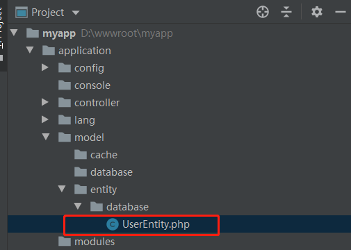

5.4 实体模型（ORM）
1、什么是ORM模型
对象关系映射（英语：Object Relational Mapping，简称ORM，或O/RM，或O/R mapping），是一种程序技术，用于实现面向对象编程语言里不
同类型系统的数据之间的转换。
简单点说，在Ocara中，就是将一个数据表映射成一个类对象，表字段作为对象属性，字段值即该对象属性的值。
新建了一个表的ORM模型后，就可以使用对象的create()和update()方法添加和修改表数据的操作。一个对象实例就是表的一行记录。
2、什么是实体模型
传统的框架对于ORM模型都是在数据模型Model中实现的。
本框架引入了领域驱动设计中的实体概念后，就将ORM模型从Model中分离出来，成为实体模型类，一般以Entity结尾。
实体的概念，请参考1.3_领域驱动设计。

（1）获取Model对象
实体模型操作数据库是调用模型Model进行的，一般可以通过实体的getModel()来获取当前Model对象。
$userEntity = new app\model\entity\database\UserEntity();
$userModel = $userEntity->getModel();
（2）Entity可以调用Model的方法
Entity不存在而Model存在的方法函数，Entity是可以直接调用的。
$userEntity = new app\model\entity\database\UserEntity();
$fields1 = $userEntity->getModel()->getFields(); //通过Model获取字段
$fields2 = $userEntity->getFields(); //通过Entity获取字段
//返回true
echo $fields1 === $fields2;
3、缓存实体
实体的概念狭义上不仅局限于数据库实体，本框架也定义了缓存实体，但是用得不多目前没有怎么支持，但是提供了缓存实体基类Ocara\Entities\CacheEntity。
4、新建和获取实体模型
使用select()可以按主键获取一条记录的ORM实体模型对象；
使用selectFrom()可以按条件获取一条记录的ORM实体模型对象；
（1）获取已存在记录的实体模型
//查询主键为1的的记录
$userEntity = \app\model\entity\database\UserEntity::build()->select(1);
//按条件查询一条记录
$where = array(
'mobile' => '18388399939',
'sex' => '1',
'status' => 1
);
$userEntity = \app\model\entity\database\UserEntity::build()->selectFrom($where);
（2）新建实体模型，导入POST数据
使用data()方法不传参数，框架会自动查表获取POST数据。
$userModel= new UsersModel();
$userModel->data();
（3）新建实体模型，导入指定数组数据
$userEntity= new UsersEntity();
$data = array(
'user_name' => 'test',
'email' => 'test@163.com'
);
$userEntity->data($data);
3、使用实体模型操作数据库
请参考5.9_数据库操作。
4、使用关联表的ORM模型
请参考5.10_关联模型操作。
5、枚举字段常量
枚举字段，应该尽量独立成枚举常量类来定义，放在Model或Entity其实有很大的局限性，特别是其他地方也要使用相同的常量时。
请参考5.15_逻辑实体和常量值对象。